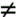

{% include JB/setup %}
{% raw %}
<div>

    <a name="toppage" class="calibre5" id="toppage"></a>
    <table width="100%" border="0" cellspacing="0" cellpadding="0" class="sfbody">
      <tr valign="top" class="calibre6">
        <td class="calibre7">
          <a name="MainContent" class="calibre5" id="MainContent"></a>
          <table width="95%" class="sfbody">
            <tr class="calibre6">
              <td class="v">
                <!--Copyright (c) 2002 Safari Tech Books Online-->
                <table width="100%" border="0" cellspacing="0" cellpadding="2" class="sfbody">
                  <tr class="calibre6">
                    <td valign="middle" class="v1" height="5">
                      
                    </td>
                  </tr>
                  <tr class="calibre6">
                    <td valign="middle" class="v1">
                      <table cellpadding="0" cellspacing="0" border="0" width="100%" class="sfbody">
                        <tr class="calibre6">
                          <td class="v"><span class="calibre9"> </span>
                   
                  <span class="calibre9">   </span>
             <span class="calibre9"> </span></td>
                        </tr>
                      </table>
                    </td>
                    <td class="v1"/>
                    <td valign="middle" class="v2"> 
           
          <span class="calibre9"><a target="_self" href="starting_ghci.html" title="Previous section" class="calibre13"></a></span>
				
				 
				
				<span class="calibre9"><a target="_self" href="starting_ghci_edit.html" title="Next section" class="calibre13"></a></span></td>
                  </tr>
                </table>
                <div id="section" class="calibre15">
                  <table width="100%" border="0" cellspacing="0" cellpadding="0" class="sfbody1">
                    <tr class="calibre16">
                      <td valign="top" class="v3">Safari IT Books Language Constructs Functional Programming Haskell Safari IT Books Programming Programming Programming Bryan O'Sullivan  Donald Bruce Stewart  John Goerzen  O'Reilly Media, Inc. Real World Haskell, 1st Edition<a name="starting_calc" class="calibre27" id="starting_calc"></a><h3 id="title-IDA0TETE" class="docSection1Title">1.3. Basic Interaction: Using ghci as a Calculator</h3><a name="x_R1" class="calibre27" id="x_R1"></a><p class="docText">In<a name="ch01-ghcicalculators" class="calibre27" id="ch01-ghcicalculators"></a> addition to providing a convenient interface for testing
    code fragments, <i class="docEmphasis">ghci</i> can function as a
    readily accessible desktop calculator. We can easily express any
    calculator operation in <i class="docEmphasis">ghci</i> and, as an
    added bonus, we can add more complex operations as we become more familiar
    with Haskell. Even using the interpreter in this simple way can help us to
    become more comfortable with how Haskell works.</p><a name="starting_calc_arithmetic" class="calibre27" id="starting_calc_arithmetic"></a><h4 id="title-IDAQUETE" class="docSection1Title">1.3.1. Simple Arithmetic</h4><a name="x_S1" class="calibre27" id="x_S1"></a><p class="docText">We can immediately start<a name="I_indexterm1_d1e1271" class="calibre27" id="I_indexterm1_d1e1271"></a> entering expressions, in order to see what <i class="docEmphasis">ghci</i> will do with them. Basic arithmetic works
      similarly to languages such as<a name="I_indexterm1_d1e1278" class="calibre27" id="I_indexterm1_d1e1278"></a><a name="I_indexterm1_d1e1281" class="calibre27" id="I_indexterm1_d1e1281"></a> C and Python—we write expressions<a name="I_indexterm1_d1e1285" class="calibre27" id="I_indexterm1_d1e1285"></a> in <span class="docEmphasis">infix</span> form, where an operator
      appears between its operands:</p><pre class="calibre39">ghci&gt; <b class="calibre40">2 + 2</b>
4
ghci&gt; <b class="calibre40">31337 * 101</b>
3165037
ghci&gt; <b class="calibre40">7.0 / 2.0</b>
3.5</pre><a name="x_ZM" class="calibre27" id="x_ZM"></a><p class="docText">The infix style of writing an expression is just a
      convenience; we can also write an expression in
      <span class="docEmphasis">prefix</span> form,<a name="I_indexterm1_d1e1313" class="calibre27" id="I_indexterm1_d1e1313"></a> where the operator precedes its arguments. To do this, we
      must enclose the operator<a name="I_indexterm1_d1e1317" class="calibre27" id="I_indexterm1_d1e1317"></a><a name="I_indexterm1_d1e1322" class="calibre27" id="I_indexterm1_d1e1322"></a> in parentheses:</p><pre class="calibre39">ghci&gt; <b class="calibre40">2 + 2</b>
4
ghci&gt; <b class="calibre40">(+) 2 2</b>
4</pre><a name="x_T1" class="calibre27" id="x_T1"></a><p class="docText">As these expressions imply, Haskell has a notion of
      integers and<a name="I_indexterm1_d1e1341" class="calibre27" id="I_indexterm1_d1e1341"></a> floating-point numbers. Integers can be arbitrarily
      large. Here, <i class="docEmphasis">(^)</i> provides
      <a name="I_indexterm1_d1e1348" class="calibre27" id="I_indexterm1_d1e1348"></a><a name="I_indexterm1_d1e1351" class="calibre27" id="I_indexterm1_d1e1351"></a>integer exponentiation:</p><pre class="calibre39">ghci&gt; <b class="calibre40">313 ^ 15</b>
27112218957718876716220410905036741257
</pre><a name="starting_calc_neg" class="calibre27" id="starting_calc_neg"></a><h4 id="title-IDA4XETE" class="docSection1Title">1.3.2. An Arithmetic Quirk: Writing Negative Numbers</h4><a name="x_X1" class="calibre27" id="x_X1"></a><p class="docText">Haskell <a name="I_indexterm1_d1e1366" class="calibre27" id="I_indexterm1_d1e1366"></a>presents us with one peculiarity in how we must write
      numbers: it's often necessary to enclose a negative number in
      parentheses. This affects us as soon as we move beyond the simplest
      expressions.</p><a name="x_bM" class="calibre27" id="x_bM"></a><p class="docText">We'll start by writing a negative number:</p><pre class="calibre39">ghci&gt; <b class="calibre40">-3</b>
-3
</pre><a name="x_cM" class="calibre27" id="x_cM"></a><p class="docText">The <tt class="calibre34">-</tt> used in the preceding code is
      a<a name="I_indexterm1_d1e1383" class="calibre27" id="I_indexterm1_d1e1383"></a><a name="I_indexterm1_d1e1386" class="calibre27" id="I_indexterm1_d1e1386"></a> unary operator. In other words, we didn't write the
      single number "-3"; we wrote the number "3"
      and applied the operator <tt class="calibre34">-</tt> to it. The <tt class="calibre34">-</tt>
      operator is Haskell's only unary operator, and we cannot mix it with
      infix operators:</p><pre class="calibre39">ghci&gt; <b class="calibre40">2 + -3</b>

&lt;interactive&gt;:1:0:
    precedence parsing error
        cannot mix `(+)' [infixl 6] and prefix `-' [infixl 6] in the same infix 
                                                              expression
</pre><a name="x_dM" class="calibre27" id="x_dM"></a><p class="docText">If we want to use the unary minus near an infix
      operator, we must wrap the expression that it applies to in
      parentheses:</p><pre class="calibre39">ghci&gt; <b class="calibre40">2 + (-3)</b>
-1
ghci&gt; <b class="calibre40">3 + (-(13 * 37))</b>
-478</pre><a name="x_uA1" class="calibre27" id="x_uA1"></a><p class="docText">This avoids a parsing ambiguity. When we apply a
      function in Haskell, we write the name of the function, followed by its
      argument—for example, <tt class="calibre34">f 3</tt>. If we did not need to wrap a
      negative number in parentheses, we would have two profoundly different
      ways to read <tt class="calibre34">f-3</tt>: it could be either "apply the function f
      to the number -3," or "subtract the number 3 from the variable
      f."</p><a name="x_Z1" class="calibre27" id="x_Z1"></a><p class="docText"><span class="docEmphasis">Most</span> of the time, we can omit
      whitespace ("blank" characters such as space and tab) from
      expressions, and Haskell will parse them as we intended. But not always.
      Here is an expression that works:</p><pre class="calibre39">ghci&gt; <b class="calibre40">2*3</b>
6
</pre><a name="x_a1" class="calibre27" id="x_a1"></a><p class="docText">And here is one that seems similar to the previous
      problematic negative number example, but that results in a different
      error message:</p><pre class="calibre39">ghci&gt; <b class="calibre40">2*-3</b>

&lt;interactive&gt;:1:1: Not in scope: `*-'
</pre><a name="x_b1" class="calibre27" id="x_b1"></a><p class="docText">Here, the Haskell implementation is reading <tt class="calibre34">*-</tt> as a single operator. Haskell lets us
      define new operators (a subject that we will return to later), but we
      haven't defined <tt class="calibre34">*-</tt>. Once again, a few
      parentheses get us and <i class="docEmphasis">ghci</i> looking
      at the expression in the same way:</p><pre class="calibre39">ghci&gt; <b class="calibre40">2*(-3)</b>
-6
</pre><a name="x_c1" class="calibre27" id="x_c1"></a><p class="docText">Compared to other languages, this unusual treatment of
      negative numbers might seem annoying, but it represents a reasoned
      trade-off. Haskell lets us define new operators at any time. This is not
      some kind of esoteric language feature; we will see quite a few
      user-defined operators in the chapters ahead. The language designers
      chose to accept a slightly cumbersome syntax for negative numbers in
      exchange for this expressive power.</p><a name="starting_calc_comparison" class="calibre27" id="starting_calc_comparison"></a><h4 id="title-IDA51ETE" class="docSection1Title">1.3.3. Boolean Logic, Operators, and Value Comparisons</h4><a name="x_j1" class="calibre27" id="x_j1"></a><p class="docText">The values of <a name="I_indexterm1_d1e1476" class="calibre27" id="I_indexterm1_d1e1476"></a><a name="I_indexterm1_d1e1479" class="calibre27" id="I_indexterm1_d1e1479"></a><a name="I_indexterm1_d1e1482" class="calibre27" id="I_indexterm1_d1e1482"></a>Boolean logic<a name="I_indexterm1_d1e1486" class="calibre27" id="I_indexterm1_d1e1486"></a><a name="I_indexterm1_d1e1489" class="calibre27" id="I_indexterm1_d1e1489"></a><a name="I_indexterm1_d1e1492" class="calibre27" id="I_indexterm1_d1e1492"></a> in Haskell are <tt class="calibre34">TRue</tt>
      and <tt class="calibre34">False</tt>. The capitalization of
      these names is important. The language uses C-influenced operators for
      working with Boolean<a name="I_indexterm1_d1e1503" class="calibre27" id="I_indexterm1_d1e1503"></a><a name="I_indexterm1_d1e1506" class="calibre27" id="I_indexterm1_d1e1506"></a><a name="I_indexterm1_d1e1509" class="calibre27" id="I_indexterm1_d1e1509"></a><a name="I_indexterm1_d1e1512" class="calibre27" id="I_indexterm1_d1e1512"></a> values: <i class="docEmphasis">(&amp;&amp;)</i>
      is logical "and", and <i class="docEmphasis">(||)</i> is logical "or":</p><pre class="calibre39">ghci&gt; <b class="calibre40">True &amp;&amp; False</b>
False
ghci&gt; <b class="calibre40">False || True</b>
True</pre><a name="x_k1" class="calibre27" id="x_k1"></a><p class="docText">While some programming languages treat the number zero
      as synonymous with <tt class="calibre34">False</tt>, Haskell
      does not, nor does it consider a nonzero value to be <tt class="calibre34">true</tt>:</p><pre class="calibre39">ghci&gt; <b class="calibre40">True &amp;&amp; 1</b>

&lt;interactive&gt;:1:8:
    No instance for (Num Bool)
      arising from the literal `1' at &lt;interactive&gt;:1:8
    Possible fix: add an instance declaration for (Num Bool)
    In the second argument of `(&amp;&amp;)', namely `1'
    In the expression: True &amp;&amp; 1
    In the definition of `it': it = True &amp;&amp; 1
</pre><a name="x_fM" class="calibre27" id="x_fM"></a><p class="docText">Once again, we are faced with a substantial-looking
      error message. In brief, it tells us that the Boolean type,
      Bool, is not a member of the family of numeric types,
      <tt class="calibre34">Num</tt>. The error message is rather long because <i class="docEmphasis">ghci</i> is pointing out the location of the
      problem and hinting at a possible change we could make that might fix
      it.</p><a name="x_vA1" class="calibre27" id="x_vA1"></a><p class="docText">Here is a more detailed breakdown of the <a name="I_indexterm1_d1e1567" class="calibre27" id="I_indexterm1_d1e1567"></a>error message:</p><a name="I_indexterm1_d1e1580" class="calibre27" id="I_indexterm1_d1e1580"></a><dl class="docList1"><dt class="calibre48"><br class="calibre48"/><p class="calibre37"><span class="docPubcolor">
<span class="docPubcolor"><span class="docMonofont">No instance for (Num Bool)</span></span>
<a name="I_indexterm1_d1e1580" class="calibre27" id="I_indexterm1_d1e1580"></a>
</span></p></dt><dd class="calibre49"><p class="docText">Tells us that <i class="docEmphasis">ghci</i> is
            trying to treat the numeric value 1 as having a
            Bool type, but it cannot</p></dd><dt class="calibre48"><br class="calibre48"/><p class="calibre37"><span class="docPubcolor">
<span class="docPubcolor"><span class="docMonofont">arising from the literal '1'</span></span>
</span></p></dt><dd class="calibre49"><p class="docText">Indicates that it was our use of the number <tt class="calibre34">1</tt>
            that caused the problem</p></dd><dt class="calibre48"><br class="calibre48"/><p class="calibre37"><span class="docPubcolor">
<span class="docPubcolor"><span class="docMonofont">In the definition of 'it'</span></span>
</span></p></dt><dd class="calibre49"><p class="docText">Refers to a <i class="docEmphasis">ghci</i> shortcut
            that we will revisit in a few pages</p></dd></dl><p class="calibre37"><table border="0" cellspacing="0" cellpadding="1" width="90%" class="calibre41"><tr class="calibre16"><td class="v3"><table width="100%" border="0" cellspacing="0" cellpadding="6" class="calibre42"><tr class="calibre16"><td width="60" valign="top" class="v3"></td><td valign="top" class="v3"><p class="docNormalTitle">Remain fearless in the face of error messages</p><a name="x_G2" class="calibre27" id="x_G2"></a><p class="docText">We have an important point to make here, which we will
        repeat throughout the early sections of this book. If you run into
        problems or error messages that you do not yet understand,
        <span class="docEmphasis">don't panic</span>. Early on, all you have to do is
        figure out enough to make progress on a problem. As you acquire
        experience, you will find it easier to understand parts of error
        messages that initially seem obscure.</p><a name="x_gM" class="calibre27" id="x_gM"></a><p class="docText">The numerous error messages have a purpose: they
        actually help us write correct code by making us perform some amount
        of debugging "up front," <a name="I_indexterm1_d1e1632" class="calibre27" id="I_indexterm1_d1e1632"></a>before we ever run a program. If you come from a
        background of working with more permissive languages, this may come as
        something of a shock. Bear with us.</p></td></tr></table></td></tr></table></p><br class="calibre48"/><a name="x_l1" class="calibre27" id="x_l1"></a><p class="docText">Most of Haskell's comparison operators are similar to
      those used in<a name="I_indexterm1_d1e1638" class="calibre27" id="I_indexterm1_d1e1638"></a> C and the many languages it has influenced:</p><pre class="calibre39">ghci&gt; <b class="calibre40">1 == 1</b>
True
ghci&gt; <b class="calibre40">2 &lt; 3</b>
True
ghci&gt; <b class="calibre40">4 &gt;= 3.99</b>
True</pre><a name="x_m1" class="calibre27" id="x_m1"></a><p class="docText">One operator that differs from its C counterpart is
      "is not equal to". In C, this is written as
      <tt class="calibre34">!=</tt>. In <a name="I_indexterm1_d1e1669" class="calibre27" id="I_indexterm1_d1e1669"></a><a name="I_indexterm1_d1e1672" class="calibre27" id="I_indexterm1_d1e1672"></a>Haskell, we write <i class="docEmphasis">(/=)</i>, which resembles the  notation used in
      mathematics:</p><pre class="calibre39">ghci&gt; <b class="calibre40">2 /= 3</b>
True
</pre><a name="x_hM" class="calibre27" id="x_hM"></a><p class="docText">Also, where C-like languages often use <i class="docEmphasis">!</i> for logical negation, Haskell uses the
      <i class="docEmphasis">not</i> function:</p><pre class="calibre39">ghci&gt; <b class="calibre40">not True</b>
False
</pre><a name="starting_calc_precedence" class="calibre27" id="starting_calc_precedence"></a><h4 id="title-IDAKEFTE" class="docSection1Title">1.3.4. Operator Precedence and Associativity</h4><a name="x_U1" class="calibre27" id="x_U1"></a><p class="docText">Like written algebra<a name="I_indexterm1_d1e1704" class="calibre27" id="I_indexterm1_d1e1704"></a><a name="I_indexterm1_d1e1709" class="calibre27" id="I_indexterm1_d1e1709"></a> and other programming languages that use infix operators,
      Haskell has a notion of operator precedence. We can use parentheses to
      <a name="I_indexterm1_d1e1713" class="calibre27" id="I_indexterm1_d1e1713"></a><a name="I_indexterm1_d1e1718" class="calibre27" id="I_indexterm1_d1e1718"></a>explicitly group parts of an expression, and precedence
      allows us to omit a few parentheses. For example, the multiplication
      operator has a higher precedence than the addition operator, so Haskell
      treats the following two expressions as equivalent:</p><pre class="calibre39">ghci&gt; <b class="calibre40">1 + (4 * 4)</b>
17
ghci&gt; <b class="calibre40">1 + 4 * 4</b>
17</pre><a name="x_iM" class="calibre27" id="x_iM"></a><p class="docText">Haskell assigns numeric precedence values to operators,
      with 1 being the lowest precedence and 9 the highest. A
      higher-precedence operator is applied before a lower-<span class="docEmphasis">precedence</span> operator. We can use <i class="docEmphasis">ghci</i> to inspect the precedence levels of
      individual operators, using <i class="docEmphasis">ghci</i>'s <i class="docEmphasis">:info</i> <a name="I_indexterm1_d1e1749" class="calibre27" id="I_indexterm1_d1e1749"></a>command:</p><pre class="calibre39">ghci&gt; <b class="calibre40">:info (+)</b>
class (Eq a, Show a) =&gt; Num a where
  (+) :: a -&gt; a -&gt; a
  ...
  	-- Defined in GHC.Num
infixl 6 +
ghci&gt; <b class="calibre40">:info (*)</b>
class (Eq a, Show a) =&gt; Num a where
  ...
  (*) :: a -&gt; a -&gt; a
  ...
  	-- Defined in GHC.Num
infixl 7 *</pre><a name="x_jM" class="calibre27" id="x_jM"></a><p class="docText">The information we seek is in the line <tt class="calibre34">infixl 6
      +</tt>, which indicates that the <i class="docEmphasis">(+)</i> operator has a precedence of 6. (We will
      explain the other output in a later chapter.) <tt class="calibre34">infixl 7
      *</tt> tells us that the <i class="docEmphasis">(*)</i>
      operator has a precedence of 7. Since <i class="docEmphasis">(*)</i> has a higher precedence than <i class="docEmphasis">(+)</i>, we can now see why <tt class="calibre34">1 + 4 *
      4</tt> is evaluated as <tt class="calibre34">1 + (4 * 4)</tt>, and not <tt class="calibre34">(1 + 4)
      * 4</tt>.</p><a name="x_kM" class="calibre27" id="x_kM"></a><p class="docText">Haskell also defines <span class="docEmphasis">associativity</span>
      of operators. This determines whether an expression containing multiple
      uses of an operator is evaluated from left to right or right to left.
      The <i class="docEmphasis">(+)</i> and <i class="docEmphasis">(*)</i> operators are left associative, which is
      represented as <tt class="calibre34">infixl</tt> in the preceding <i class="docEmphasis">ghci</i> output. A right associative operator is
      displayed with <tt class="calibre34">infixr</tt>:</p><pre class="calibre39">ghci&gt; <b class="calibre40">:info (^)</b>
(^) :: (Num a, Integral b) =&gt; a -&gt; b -&gt; a 	-- Defined in GHC.Real
infixr 8 ^
</pre><a name="x_lM" class="calibre27" id="x_lM"></a><p class="docText">The combination of precedence and associativity rules
      are usually referred to as <span class="docEmphasis">fixity</span> rules.</p><a name="starting_calc_undef" class="calibre27" id="starting_calc_undef"></a><h4 id="title-IDA4IFTE" class="docSection1Title">1.3.5. Undefined Values, and Introducing Variables</h4><a name="x_d1" class="calibre27" id="x_d1"></a><p class="docText">Haskell's<a name="I_indexterm1_d1e1831" class="calibre27" id="I_indexterm1_d1e1831"></a><a name="I_indexterm1_d1e1834" class="calibre27" id="I_indexterm1_d1e1834"></a><a name="I_indexterm1_d1e1837" class="calibre27" id="I_indexterm1_d1e1837"></a> <tt class="calibre34">Prelude</tt>, the standard library we
      mentioned earlier, defines at least one well-known mathematical constant
      for us:</p><pre class="calibre39">ghci&gt; <b class="calibre40">pi</b>
3.141592653589793
</pre><a name="x_e1" class="calibre27" id="x_e1"></a><p class="docText">But its coverage of mathematical constants is not
      comprehensive, as we can quickly see. Let us look for Euler's number,
      <span class="docMonofont">e</span>:</p><pre class="calibre39">ghci&gt; <b class="calibre40">e</b>

&lt;interactive&gt;:1:0: Not in scope: `e'
</pre><a name="x_f1" class="calibre27" id="x_f1"></a><p class="docText">Oh well. We have to define it ourselves.</p><a name="starting_calc_undefd1e1897" class="calibre27" id="starting_calc_undefd1e1897"></a><div class="docNote"><p class="docNormalTitle">NOTE</p><p class="calibre37"><a name="x_g1" class="calibre27" id="x_g1"></a></p><p class="docText">If the <tt class="calibre34">not in scope</tt> error message
        seems a little daunting, do not worry. All it means is that there is
        no variable defined with the name <span class="docMonofont">e</span>.</p></div><a name="x_h1" class="calibre27" id="x_h1"></a><p class="docText">Using <i class="docEmphasis">ghci</i>'s <tt class="calibre34">let</tt> construct, we<a name="I_indexterm1_d1e1882" class="calibre27" id="I_indexterm1_d1e1882"></a> can make a temporary definition of <span class="docMonofont">e</span>
      ourselves:</p><pre class="calibre39">          ghci&gt; 
          <b class="calibre40">let e = exp 1</b></pre><a name="x_mM" class="calibre27" id="x_mM"></a><p class="docText">This is an application of the exponential function,
      <i class="docEmphasis">exp</i>, and our first example of
      applying a function in Haskell. While languages such as Python require
      parentheses around the arguments to a function, Haskell does not.</p><a name="x_i1" class="calibre27" id="x_i1"></a><p class="docText">With <span class="docMonofont">e</span> defined, we can now use it in
      arithmetic expressions. The <i class="docEmphasis">(^)</i>
      exponentiation operator<a name="I_indexterm1_d1e1908" class="calibre27" id="I_indexterm1_d1e1908"></a><a name="I_indexterm1_d1e1911" class="calibre27" id="I_indexterm1_d1e1911"></a> that we introduced earlier can only raise a number to an
      integer power. To use a floating-point number as the exponent, we use
      the<a name="I_indexterm1_d1e1915" class="calibre27" id="I_indexterm1_d1e1915"></a><a name="I_indexterm1_d1e1918" class="calibre27" id="I_indexterm1_d1e1918"></a><i class="docEmphasis">(**)</i> exponentiation
      operator:</p><pre class="calibre39">ghci&gt; <b class="calibre40">(e ** pi) - pi</b>
19.99909997918947
</pre><p class="calibre37"><table border="0" cellspacing="0" cellpadding="1" width="90%" class="calibre41"><tr class="calibre16"><td class="v3"><table width="100%" border="0" cellspacing="0" cellpadding="6" class="calibre42"><tr class="calibre16"><td width="60" valign="top" class="v3"></td><td valign="top" class="v3"><p class="docCautionsTitle">This syntax is ghci-specific</p><a name="x_nM" class="calibre27" id="x_nM"></a><p class="docText">The syntax for <tt class="calibre34">let</tt>
        that <i class="docEmphasis">ghci</i> accepts is not the same
        as we would use at the "top level" of a normal Haskell
        program. We will see the normal syntax in <a class="docLink" href="deftypes_locals.html#deftypes_locals">Section 3.9</a>.</p></td></tr></table></td></tr></table></p><br class="calibre48"/><a name="starting_calcd1e1982" class="calibre27" id="starting_calcd1e1982"></a><h4 id="title-IDAWNFTE" class="docSection1Title">1.3.6. Dealing with Precedence and Associativity Rules</h4><a name="x_V1" class="calibre27" id="x_V1"></a><p class="docText">It is sometimes better to leave at least some
      parentheses in place, even when Haskell allows us to omit them. Their
      presence can help future readers (including ourselves) to understand
      what we intended.</p><a name="x_W1" class="calibre27" id="x_W1"></a><p class="docText">Even more importantly, complex expressions that rely
      completely on operator precedence are notorious sources of bugs. A
      compiler and a human can easily end up with different notions of what
      even a short, parenthesis-free expression is supposed to do.</p><a name="x_pM" class="calibre27" id="x_pM"></a><p class="docText">There is no need to remember all of the precedence and
      associativity rules numbers: it is simpler to add parentheses if you are
      unsure.</p>
<a href="21061538.html" class="calibre2"></a><ul class="calibre18"></ul></td>
                    </tr>
                  </table>
                  <table width="100%" border="0" cellspacing="0" cellpadding="2" class="sfbody1">
                    <tr class="calibre16">
                      <td valign="middle" class="v3" height="5">
                        
                      </td>
                    </tr>
                    <tr class="calibre16">
                      <td valign="middle" class="v3">
                        <table cellpadding="0" cellspacing="0" border="0" width="100%" class="sfbody1">
                          <tr class="calibre16">
                            <td class="v5"><span class="calibre33"> </span>
                   
                  <span class="calibre33">   </span>
             <span class="calibre33"> </span></td>
                          </tr>
                        </table>
                      </td>
                      <td class="v3"/>
                      <td valign="middle" class="v6"> 
           
          <span class="calibre33"><a target="_self" href="starting_ghci.html" title="Previous section" class="calibre2"></a></span>
				
				 
				
				<span class="calibre33"><a target="_self" href="starting_ghci_edit.html" title="Next section" class="calibre2"></a></span></td>
                    </tr>
                  </table>
                  <table width="100%" border="0" cellspacing="0" cellpadding="2" class="sfbody1">
                    <tr class="calibre16">
                      <td valign="top" class="v6">
                        <span class="calibre33"></span>
                      </td>
                    </tr>
                  </table>
                </div>
                <!--IP User 2-->
              </td>
            </tr>
          </table>
        </td>
        <td class="calibre7">
                         
                      </td>
      </tr>
      <tr class="calibre6">
        <td colspan="3" valign="bottom" class="calibre7">
          <br class="calibre20"/>
          <p class="v4"></p>
          <br class="calibre20"/>
        </td>
      </tr>
    </table>
  </div>

{% endraw %}

